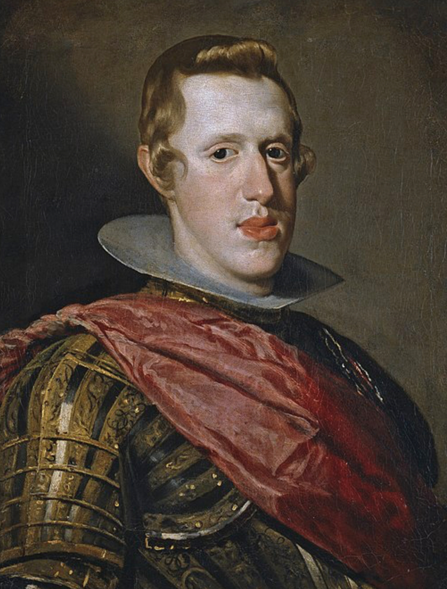

vous êtes plus Philippe IV
Philippe IV
 Philippe IV, né à Valladolid le 8 avril 1605 et mort à Madrid le 17 septembre 1665, est un roi espagnol également connu sous le nom de Philippe le Grand ou le roi-Planète. Philippe IV a régné sur l'Espagne de 1621 à 1665, une période qui a été marquée par des guerres et des conflits avec d'autres puissances européennes, notamment la France et les Pays-Bas. Tout au long de son règne, Philippe IV a cherché à renforcer le pouvoir de l'État espagnol et à promouvoir l'art et la culture. Philippe IV est surtout connu pour avoir mené des guerres contre la France. Ces conflits ont commencé en 1635 avec la guerre franco-espagnole et ont continué tout au long de son règne. Philippe IV a également été impliqué dans la guerre de Trente Ans, un conflit religieux et politique qui a eu lieu en Europe centrale de 1618 à 1648. Au cours de son règne, Philippe IV a également soutenu les arts et la culture. Il a encouragé la création d'œuvres d'art et a commandé des portraits de lui-même et de sa famille à des artistes renommés, tels que Diego Velázquez. Il a également contribué à l'embellissement de Madrid, notamment en construisant de nouveaux palais et places publiques.
Voici un résumé des principales guerres menées par Philippe IV, également connu sous le nom de "le Grand" ou le "roi-Planète" :
• La guerre de Trente Ans (1618-1648) : Cette guerre a été déclenchée par des tensions religieuses
et politiques en Europe centrale, impliquant des puissances comme l'Empire germanique, la Suède, la
France, l'Espagne et d'autres. Philippe IV a soutenu les catholiques et a envoyé des troupes pour
défendre les territoires espagnols en Italie et dans les Pays-Bas méridionaux. Bien que l'Espagne
ait remporté certaines victoires, la guerre a été coûteuse et a affaibli l'empire espagnol.
• La guerre franco-espagnole (1635-1659) : Cette guerre a commencé lorsque la France a décidé de
s'opposer à l'expansion territoriale de l'Espagne en Europe, notamment en Italie et aux Pays-Bas
méridionaux. La guerre a été longue et coûteuse pour les deux parties, mais la France a finalement
remporté la victoire et a obtenu de nouveaux territoires.
• La guerre de Restauration portugaise (1640-1668) : Cette guerre a été déclenchée par la rébellion
du Portugal contre l'Espagne, qui avait dominé le pays depuis 1580. Philippe IV a envoyé des troupes
pour réprimer la révolte, mais la guerre a été longue et difficile, et l'Espagne n'a réussi à
rétablir son contrôle que partiellement.
• La guerre de Catalogne (1640-1652) : Cette guerre a été déclenchée par la révolte des Catalans
contre le pouvoir central espagnol. Bien que l'Espagne ait réussi à réprimer la révolte, la guerre a
affaibli l'empire espagnol et a renforcé la position de la France en Europe.
• La guerre avec la France (1667-1668) : Cette guerre a commencé lorsque Louis XIV a tenté de
s'emparer des territoires espagnols dans les Pays-Bas méridionaux. Bien que la guerre ait été courte
et limitée, elle a souligné la faiblesse de l'Espagne et l'expansionnisme de la France.
En résumé, les guerres menées par Philippe IV ont été caractérisées par la défense des intérêts
espagnols en Europe et dans le monde, mais ont également été coûteuses et souvent sanglantes pour
toutes les parties impliquées.
Héritage :
L'héritage de Philippe IV est complexe. D'une part, il a étendu le pouvoir de l'État espagnol et a
défendu l'art et la culture. De l'autre, son règne a été marqué par des guerres coûteuses et des
conflits avec d'autres puissances européennes. Après sa mort en 1665, il a été remplacé par son fils
Charles II, qui n'a pas réussi à maintenir l'unité de l'Empire espagnol.
En conclusion, Philippe IV, également connu sous le nom de "roi-Planète", a été l'un des plus
importants monarques de l'histoire espagnole, gouvernant pendant une période de grands changements
en Europe. Son règne a été marqué par des guerres et des conflits, qui ont permis à l'Espagne de
préserver son influence en Europe. Bien que son héritage soit complexe, Philippe IV a laissé une
marque indélébile sur l'histoire de l'Espagne et de l'Europe, et son règne reste un sujet d'étude
important pour les historiens et les étudiants aujourd'hui